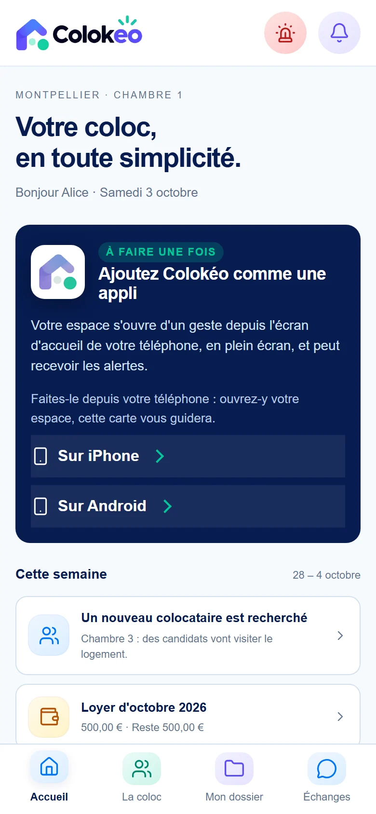
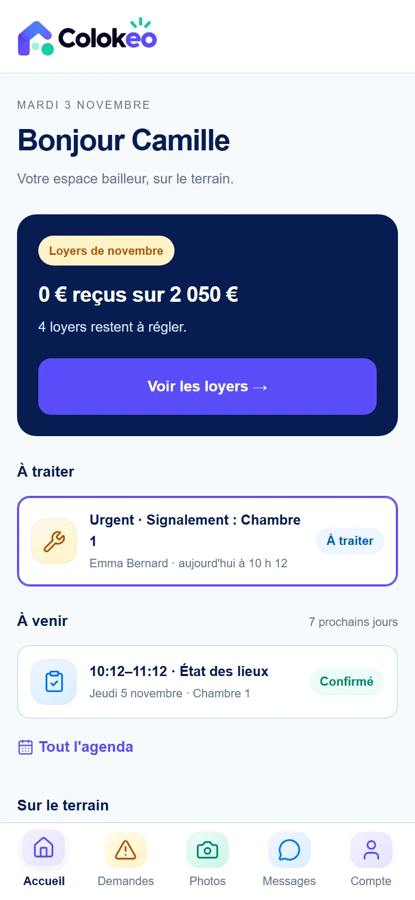

LE PRODUIT · FONCTIONNALITÉS
De la première visite
au dernier justificatif.
Automatise la gestion de ta colocation, suis les points de conformité juridique et fiscale et retrouve ton dossier quand tu en as besoin.




CHOISIS TON PARCOURS
Voici ce que tu peux prendre en main.
Des situations concrètes, les fonctions qui y répondent et les écrans du produit sur données fictives.
Piloter le bien
Voir ce qui compte aujourd’hui et retrouver les informations du bien.
Voir les fonctionnalités De la visite au départGérer les locataires
Suivre les candidatures et garder les pièces de chaque locataire dans le bon dossier.
Voir les fonctionnalités Le suivi financierSuivre les loyers et les charges
Identifier les sommes reçues et celles qui restent à encaisser, justificatifs à l’appui.
Voir les fonctionnalités Dossiers et preuvesClasser les pièces et préparer les pépins
Repérer les pièces manquantes et retrouver les justificatifs quand ils deviennent utiles.
Voir les fonctionnalités Entretien et logementOrganiser la vie de la coloc
Suivre les tâches, les équipements et les interventions dans la durée.
Voir les fonctionnalités Portails et notificationsÉchanger sur téléphone
Donner à chacun un endroit pour ses documents, ses demandes et ses rendez-vous.
Voir les fonctionnalités Comptabilité et fiscalitéPréparer l’année LMNP
Rassembler les recettes, dépenses, crédits et immobilisations au fil de l’eau.
Voir les fonctionnalitésPrends la main sur la Maison des Tilleuls.
Choisis les données fictives à l’inscription pour essayer les parcours avec une colocation déjà renseignée.